ajsdhkajhdksajhd
alskdjaldjlakd
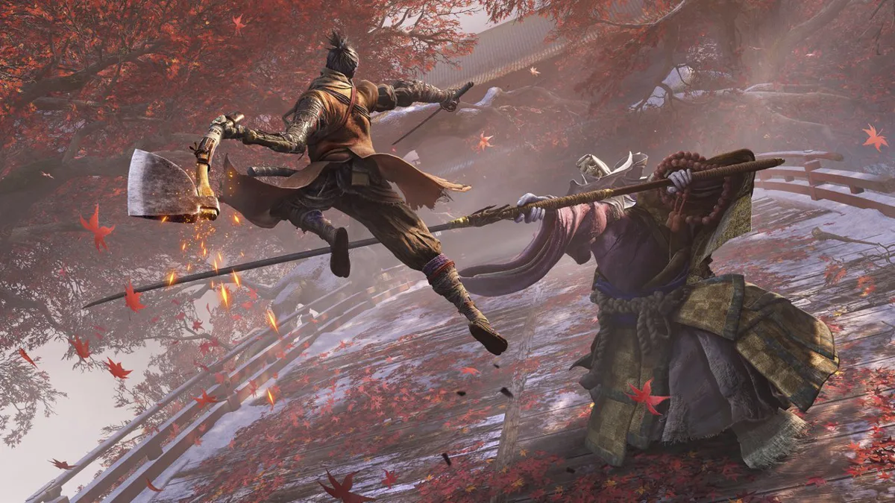
Card title
This is a wider card with supporting text below as a natural lead-in to additional content. This content is a little bit longer.
Last updated 3 mins ago
Sekiro: Shadows Die Twice
Prepárate para la venganza... una y otra vez. Explora el brutal y desafiante Japón feudal de Sekiro: Shadows Die Twice, donde la muerte es solo un paso en el camino del shinobi.
Jefes
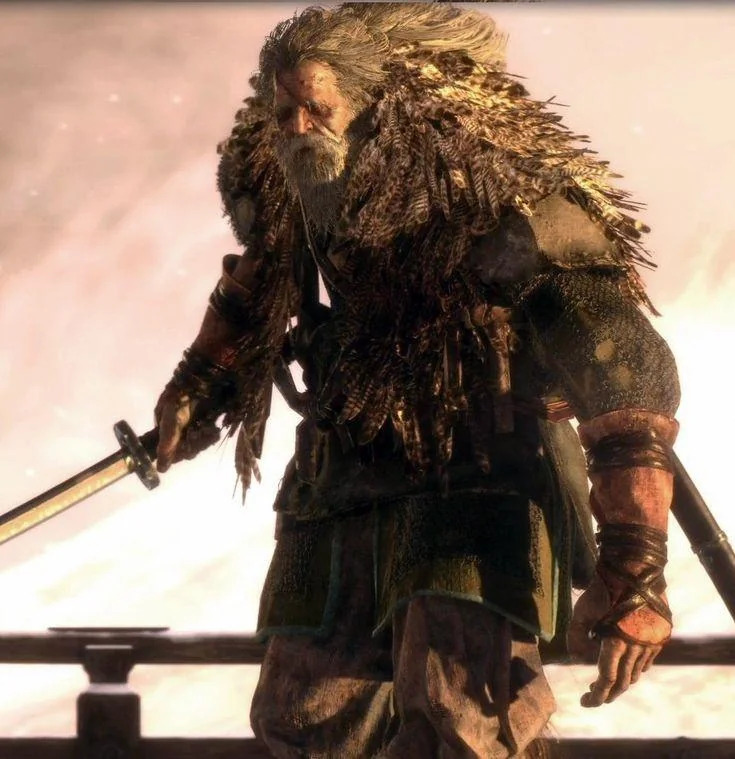
Buho Gran Shinobi
Es el mentor de Sekiro. Cuando éste era un niño, sufrió las consecuencias de un conflicto que afectó a la población japonesa a finales de la Era Sengoku. Al encontrarse huérfano, el Búho le acogió bajo su amparo. Él mismo entrenaría a Sekiro y usaría a otros maestros shinobi para que sean mentores del niño, como la Dama Mariposa. Durante la formación de Sekiro, el Búho empezó a ver al niño como su hijo adoptivo, y del mismo modo, Sekiro veía al Búho como su padre adoptivo.

Simio Guardian
El Simio Guardián en Sekiro: Shadows Die Twice es un jefe obligatorio ubicado en el Pasadizo del Valle Sumergido. Se trata de un simio inmortal y solitario que custodia el Loto del Palacio, una flor que se encuentra en un estanque dominado por una estatua gigante. El Simio Guardián es conocido por su pelaje blanco, una cicatriz roja desde la coronilla hasta la mejilla izquierda, y garras grandes y afiladas. Es un enemigo formidable, con una gran barra de salud y ataques devastadores, requiriendo práctica para dominar sus movimientos
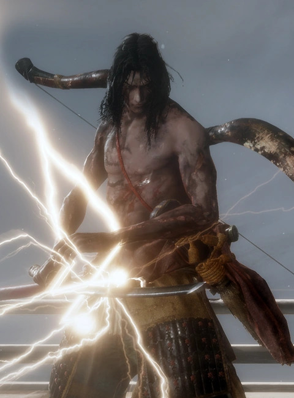
Genichiro Ashina
El Comandante Genichiro es el líder del Clan Ashina. Es el nieto de Isshin Ashina, un legendario espadachín y héroe del norte que fundó el clan, aunque no como un nacimiento legítimo, ya que fue adoptado tras la muerte de su madre plebeya. No obstante, tiene un profundo sentido del deber hacia el clan. Con su país al borde de la derrota, su gente debe ser protegida incluso a través de medios sobrenaturales; Genichiro estudió las "artes heréticas" y dominó el relámpago de Tomoe.

Demonio del Odio
El Demonio del odio es en lo que se convierte el Escultor tras ser consumido por la ira y las llamas de resentimiento que se encontraban dentro de él, tras no poder convertirse en un Shura.El Demonio del Odio en Sekiro es un jefe opcional que representa el resentimiento y la rabia del Escultor. El Escultor, en su juventud conocido como Orangután, era un shinobi que se sumió en una sangrienta trayectoria, siendo salvado por Isshin Ashina cortándole el brazo izquierdo. El Demonio del Odio es el resultado de ese resentimiento y violencia acumulada
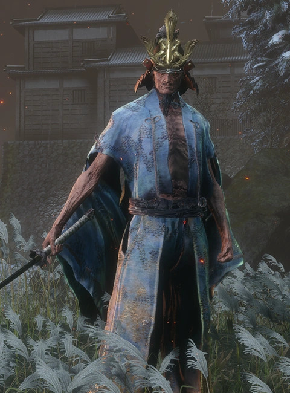
Isshin Ashina
Isshin Ashina es el fundador del Clan Ashina y abuelo del Comandante Genichiro. Fue un honorable guerrero japonés conocido por su maestría con la espada. Tiempo atrás, tomó el control de su región en una sola generación, fundando el clan y ganándose el título de "Héroe del País del Norte". Cuando era joven, luchaba sin parar puliendo su técnica con sangre enemiga. Consolidó sus enseñanzas en el "estilo Ashina" para favorecer el dominio de su clan.
Protesis Shinobi
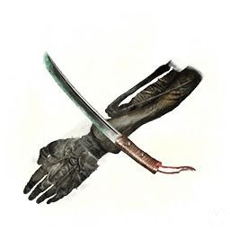
Sabimaru
Esta pequeña katana acoplada a la prótesis inflige veneno rápidamente con ataques combinados. Es ideal contra enemigos vulnerables a esta condición, como las guerreras Okami, permitiendo combos ágiles que acumulan el estado venenoso.
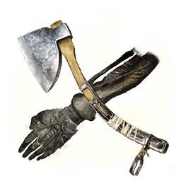
Hacha Shinobi
Un hacha pesada diseñada para destrozar la guardia y escudos enemigos, que de otra forma serían impenetrables. Sekiro ejecuta un golpe descendente poderoso, rompiendo defensas y creando aperturas letales en el combate.
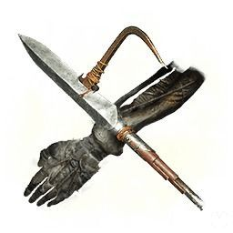
Lanza Cargada
Esta lanza se acopla a la prótesis para ataques de largo alcance, ideal para mantener distancia. Permite enganchar enemigos pequeños y arrastrarlos, o retirar armaduras, siendo efectiva para iniciar combos y estocadas precisas.

Barrenos de Robert
Los petardos de la prótesis producen un ruido ensordecedor que asusta a bestias y humanoides. Son útiles para interrumpir ataques, generar oportunidades de golpes mortales y controlar el espacio contra múltiples adversarios.
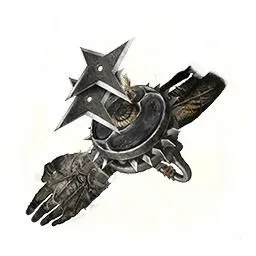
Shuriken
Una rueda de shuriken que se lanza desde la prótesis, permitiendo ataques rápidos a distancia. Ideal para interrumpir enemigos ágiles, voladores o lejanos, dañando vitalidad y postura eficazmente en el combate.
Escenarios

Castillo Ashina
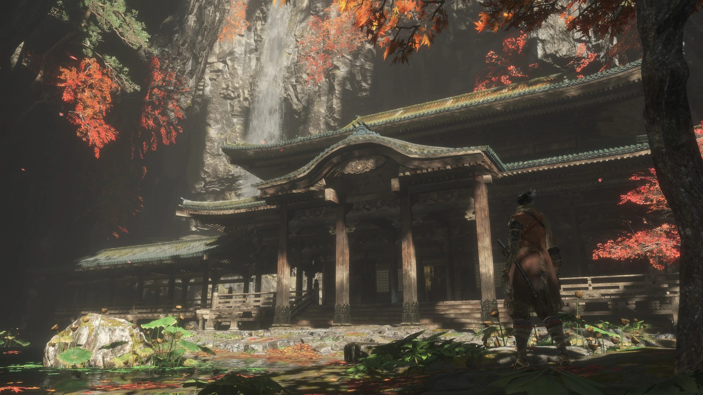
Templo Senpo
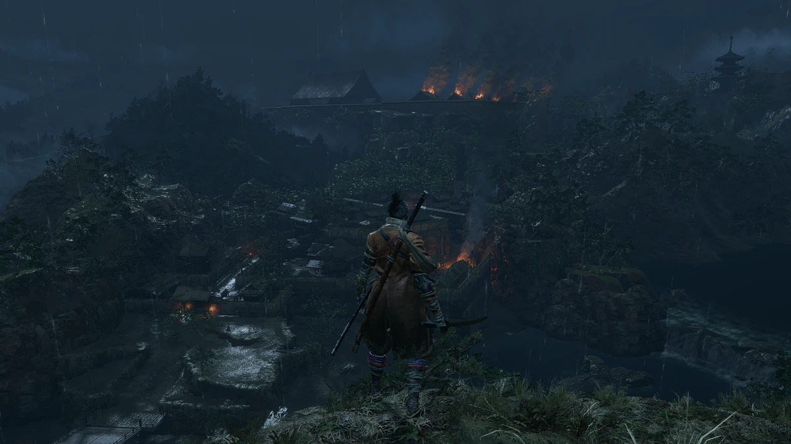
Hacienda Hirata
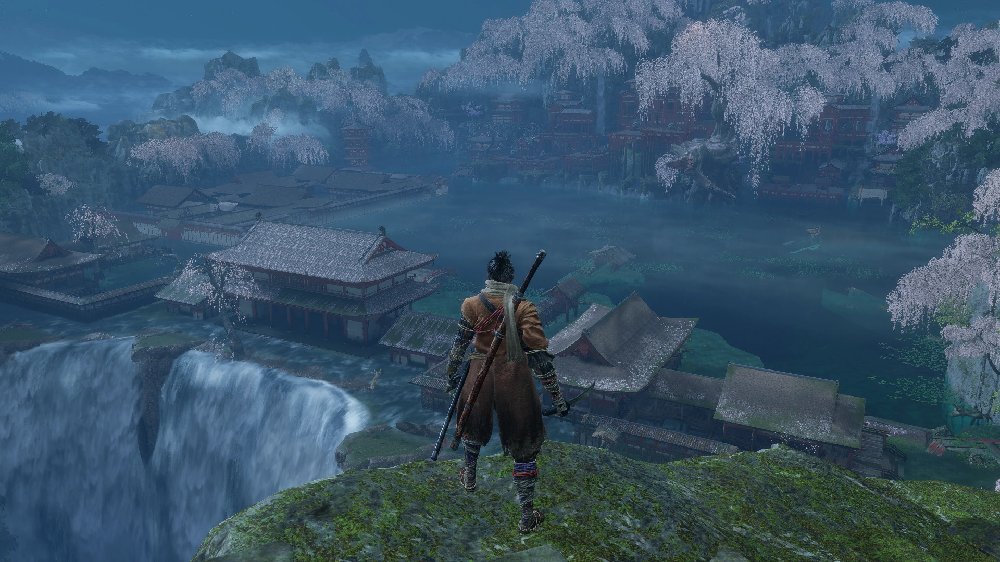
Palacio del Manantial
Mas Juegos
FromSoftware es famoso por sus desafiantes juegos de acción y rol, conocidos como "Soulslike": Demon's Souls y la trilogía Dark Souls: Los pilares del género. Bloodborne: Un "Soulslike" más rápido y gótico. Sekiro: Shadows Die Twice: Centrado en el combate de espadas y el sigilo. Elden Ring: Su exitoso "Soulslike" de mundo abierto.

Dark Souls

Dark Souls 2

Dark Souls 3
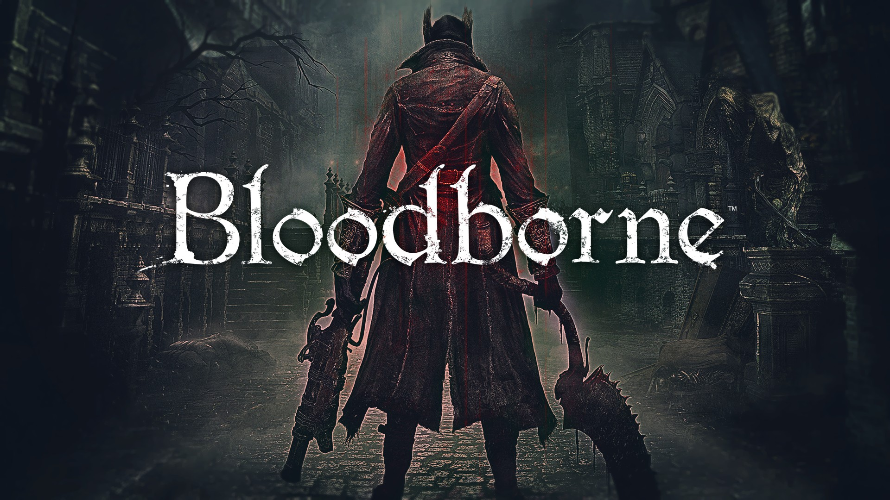
Bloodborne

Elden Ring